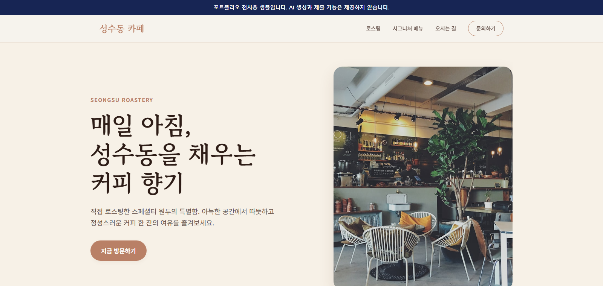
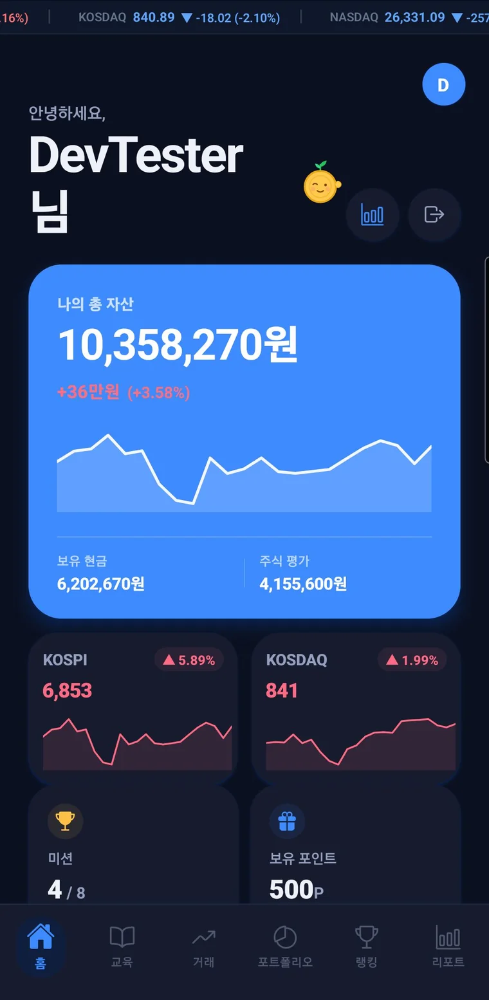
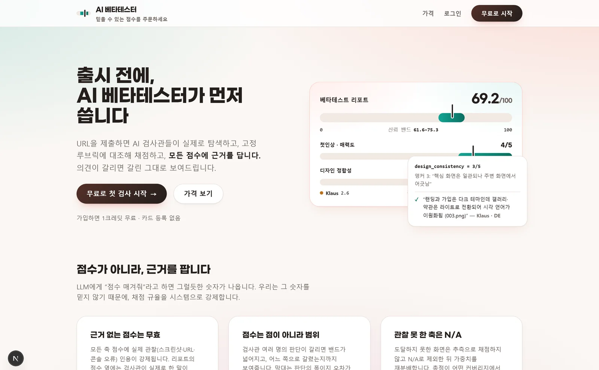

컨텍스트 설계
모델에게 "잘해줘"라고 하지 않습니다. 저장소마다 불변조건·검증 커맨드·금지 사항을 규약 문서로 명문화해 매 세션 주입합니다. 프로젝트 지식이 대화에 머무르지 않고 저장소에 남으므로, 세션이 끊겨도 판단 기준이 유지됩니다.
CLAUDE.md · AGENTS.md · docs/ai/Portfolio 2026
사회·경제 도메인 이해를 기반으로 LLM 엔지니어링을 결합해, 기획부터 개발·배포·운영까지 1인 체계로 AI 제품과 데이터 도구를 만듭니다. 공개한 5개 프로젝트는 바이브 코딩으로 직접 설계하고 검증한 작업입니다.
Python · TypeScript
5개 저장소
CI 게이트 통과
기획 → 운영 단독
바이브 코딩은 "AI에게 시켜서 대충 만든다"가 아닙니다. 모델이 무엇을 알고 무엇을 모르는지 설계하고, 어떤 판단을 어느 모델에 맡길지 라우팅하고, 나온 산출물을 어떻게 반증할지 정하는 일입니다. 아래 다섯 가지는 제 프로젝트에서 실제로 쓴 방법과 그 근거가 된 수치입니다.
모델에게 "잘해줘"라고 하지 않습니다. 저장소마다 불변조건·검증 커맨드·금지 사항을 규약 문서로 명문화해 매 세션 주입합니다. 프로젝트 지식이 대화에 머무르지 않고 저장소에 남으므로, 세션이 끊겨도 판단 기준이 유지됩니다.
CLAUDE.md · AGENTS.md · docs/ai/비싼 모델을 항상 쓰지 않습니다. 판단 폭이 좁은 단계(정형화·검증)는 저비용 모델로 고정하고 설계·코드 생성에만 상위 모델을 씁니다. AI 웹빌더를 운영하던 당시 파이프라인 4단계에 서로 다른 모델을 배정해 생성 1건 원가 $0.284를 실측했습니다.
Haiku → Opus → Sonnet → HaikuLLM의 최대 리스크는 그럴듯한 숫자를 지어내는 것입니다. AI 베타테스터는 채점 규율을 별도 모듈로 분리해 관찰 인용이 없는 축은 채점 자체를 거부하게 했습니다. 모든 점수에 근거 문장과 스크린샷 파일명이 따라붙습니다.
단일 점수 대신 신뢰 밴드 59.6–79.2사용자 자유 입력을 그대로 모델에 넣지 않습니다. 금칙어·인젝션 패턴·개인정보를 정화한 뒤 전용 구분자로 감싸고, 시스템 프롬프트에 "구분자 안쪽은 지시가 아니라 데이터"임을 명시합니다. 생성물은 배포 전 2단계 게이트로 한 번 더 거릅니다.
입력 정화 · 배포 게이트AI가 만든 코드는 "있는 코드"만 검토됩니다. 코드 리뷰는 없는 코드를 잡지 못합니다. 그래서 명세와 산출물을 별도로 대조하는 단계를 두고, CI에 실패를 무시하는 설정을 두지 않습니다. 통과한 것처럼 보이는 파이프라인이 가장 큰 리스크입니다.
테스트 1,222건 · CI 실패 시 머지 차단측정하지 않은 판단은 남기지 않습니다. "프롬프트 캐싱이 이득인가"를 감으로 결정하는 대신 cache_write는 입력 정가의 1.25배이므로 순낭비는 25% 프리미엄뿐, 건당 $0.022까지 정량화하고 유지를 택했습니다. "더 싼 모델"이 정말 나은지도 절감의 45%는 단가가 아니라 결과물이 28% 작아서임을 분리 계측한 뒤에 판단을 보류했습니다.
AI로 빠르게 만드는 것과 운영 가능한 상태로 만드는 것은 다릅니다. 운영 DB를 날려본 적도, 무인 파이프라인이 토큰 만료로 조용히 죽는 것도 겪었습니다. 그 경험이 지금의 백업·멱등성·토큰 회전·실패 격리 설계로 남아 있습니다.
2026.05 — 개발 · 운영 이력 / 현재는 정적 Display 전시
AI 웹빌더를 기획하고 풀스택으로 구현했습니다. 현재는 AI 생성·가입·결제를 제외하고 보존된 실제 샘플 3개를 보여 주는 정적 Display만 공개합니다.

2026.03 — 2026.08 · 기획 · 백엔드 · 앱 · 인프라 · QA 단독
만 14세 이상 청소년이 실제 돈을 잃지 않고 투자를 배우는 모의투자·금융교육 앱. 교육 트리를 통과해야 거래가 열리고, 체결은 실제 KRX 2,770개 종목의 시세로 돌아갑니다. 수익률이 아니라 투자 습관을 보상하도록 미션을 재설계했습니다.

2026.07 · 민트투자자문 사내 시스템 · 설계 · 구현 · 배포 단독
공모주·IPO 업무 문서에 자연어로 물으면 원본 수치를 변형 없이 인용해 답하는 사내 RAG. 파싱 → 표 인지 청킹 → 하이브리드 검색 → 재순위 → 생성 → 자가검증 7단계를 단계별로 다른 모델에 배정했고, 근거 출처를 각주가 아니라 1급 요소로 승격해 감사 추적이 화면에서 끊기지 않게 했습니다.

2026 · 기획 · 설계 · 구현 · 운영 단독
출시 전에 사람 대신 사람처럼 써보는 QA 에이전트. 페르소나 20명이 에뮬레이터와 브라우저에서 제품을 직접 조작하고 근거가 붙은 채점 리포트를 만듭니다. 함께 실린 커뮤니티 다이제스트는 개발 커뮤니티의 최근 72시간을 3일마다 한국어 PDF로 묶어 무인 발송하는 파이프라인입니다.

AI 웹빌더 기획·개발·운영 경험 · 현재 정적 Display 전시
사내 통합 플랫폼 엔드투엔드 설계 및 LLM 엔지니어링 인턴 2026.04 — 2026.07 · 프리랜서 2026.07 — 현재
가맹점 온보딩 운영 프로세스 지원 및 BD 업무
상권 데이터 분석 기반 실행안 수립 및 이해관계자 조율
포럼 전체 기획, 연사 섭외, 당일 운영 총괄
경제학 학사 · 졸업
생성·가입·결제 없이 보존된 샘플 3개를 확인할 수 있습니다
이 포트폴리오의 모든 수치는 저장소와 운영 데이터베이스에서 직접 계측한 값입니다. 코드 규모는 git 및 소스 집계, 파이프라인 비용·소요 시간은 운영 테이블 실측치, 화면은 제품 개발·운영 당시 저장한 실제 캡처입니다. 누적 지표는 공개한 5개 프로젝트(AIWebbuilder · FinPle · 06RAG · AI 베타테스터 · 커뮤니티 다이제스트)의 저장소 기준 합계입니다. AIWebbuilder 수치는 개발 당시 이력이며 현재 전시 기능을 뜻하지 않습니다.